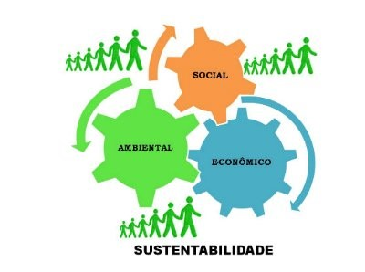

Visão Geral
Sustentabilidade refere-se ao princípio da busca pelo equilíbrio entre a disponibilidade dos recursos naturais e a exploração deles por parte da sociedade. Ou seja, visa a equilibrar a preservação do meio ambiente e o que ele pode oferecer em consonância com a qualidade de vida da população.
O termo sustentabilidade surge da necessidade de discussão a respeito da forma como a sociedade vem explorando e usando os recursos naturais, pensando em alternativas de preservá-lo evitando, assim, que esses recursos esgotem-se na natureza. A definição de sustentabilidade está atrelada ao conceito de desenvolvimento sustentável.
Atualmente, muito é comentado sobre desenvolvimento sustentável, visto o despertar de consciência da sociedade como um todo para a ideia de que os recursos naturais não são infinitos como muitos pensavam. As inúmeras discussões por parte da comunidade científica acerca das questões relacionadas ao meio ambiente e sua intensa degradação por parte da ação antrópica também colocaram esse termo em evidência.
Tripé da Sustentabilidade
O chamado tripé da sustentabilidade é baseado em três princípios: o social, o ambiental e o econômico. Esses três fatores precisam ser integrados para que a sustentabilidade de fato aconteça. Sem eles, a sustentabilidade não se sustenta.
- Social:Engloba as pessoas e suas condições de vida, como educação, saúde, violência, lazer, dentre outros aspectos.
- Ambiental: Refere-se aos recursos naturais do planeta e a forma como são utilizados pela sociedade, comunidades ou empresas.
- Econômico: Refere-se aos recursos naturais do planeta e a forma como são utilizados pela sociedade, comunidades ou empresas.

Tipos de Sustentabilidade
Sustentabilidade Ambiental
A Sustentabilidade ambiental abrange a conservação e a manutenção do meio ambiente.
Importante notar que, para que a sustentabilidade ambiental seja efetivada, as pessoas devem estar em harmonia com o meio ambiente, para obterem melhoria na qualidade de vida.
O objetivo da sustentabilidade ambiental é que os interesses das gerações futuras não estejam comprometidos pela satisfação das necessidades da geração atual.
Sustentabilidade Empresarial
Atualmente, muitas estratégias de responsabilidade social de empresas estão pautadas na sustentabilidade.
Produtos e ações sustentáveis na área empresarial ganham destaque e o gosto dos consumidores. As pessoas estão cada vez mais conscientes do peso ecológico e social de suas escolhas.
Nesse caso, a empresa possui uma postura de responsabilidade com os valores ambientais e sociais. Além de fundamentada na preservação do meio ambiente e melhoria da qualidade de vida das pessoas.
Sustentabilidade Social
A sustentabilidade social sugere a igualdade dos indivíduos, baseado no bem estar da população.
Para isso, é necessária a participação da população, com intuito de fortalecer as propostas de desenvolvimento social, acesso à educação, cultura e saúde.
Sustentabilidade Econômica
A sustentabilidade econômica é fundamentada num modelo de gestão sustentável. Isso implica na gestão de adequada dos recursos naturais, que objetivam o crescimento econômico, o desenvolvimento social e melhoria da distribuição de renda.
Em resumo, corresponde à capacidade de produção, de distribuição e de utilização das riquezas produzidas pelo homem, buscando uma justa distribuição de renda.